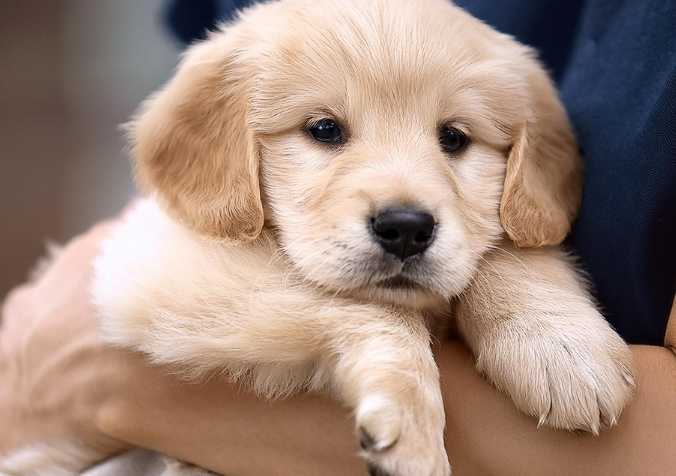
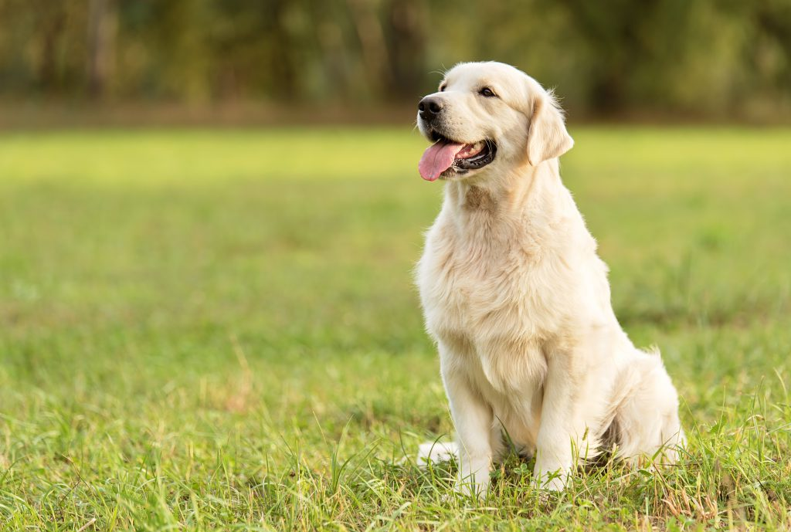

영국 스코틀랜드 원산의 견종, 골든리트리버

골든리트리버의 이름은 '되돌아오다'라는 뜻의 'Retrieve'에 접미사 er가 붙은 것이다. 이런 이름이 붙은 이유는 주로 조류 수렵에서 땅에 떨어진 새를 물어오는 역할을 맡았던 태생 수렵견 견종이었기 때문이다. 국립국어원이 규정하는 골든리트리버의 규범 외래어 표기는 '골든 레트리버'이다.

1860년대에 마저리뱅크스는 자신의 스코틀랜드 구이사칸 영지에서 자신이 생각하는 완벽한 리트리버'를 만들고자 했다. 그는 '헨리 펠럼'경이 스탠머 파크 영지에서 기르던 '누스'라는 이름의 노란색 플랫 코티드 리트리버를 구입했고, 1868년에 '벨'이란 이름의 트위드 워터 스패니얼 암컷과 교배시켰다. 이 교배로 '프림로즈', '에이다', '카우슬립', '크로커스'라는 노란색 강아지 네 마리가 태어났다. 4마리의 새끼 중 가장 튼튼한 암컷이었던 카우슬립은 '트위드'라는 이름의 트위드 워터 스패니얼과 교배하여 '톱시'라는 이름의 암컷 강아지를 낳았고, 그 후 '삼손'이란 이름의 아이리시 레드 세터와 교배하여 '잭'이란 이름의 강아지를 낳았다. 톱시는 '삼보'란 이름의 검은색 플랫 코티드 리트리버와 교배되었고, 톱시와 삼보의 새끼 중 암컷이었던 '조'는 잭과 교배되어 '누스 2세'와 '질'을 낳았다. 질은 '트랜서'라는 검은색 래브라도 리트리버와 교배되었고, 그 새끼 중 암컷이었던 '퀴니'는 누스 2세와 교배되었다. 오늘날 모든 골든 리트리버는 이 교배에서 비롯된 것이다. 이 교배에서 태어난 새끼들은 순흑색에서 밝은 크림색까지 다양한 색을 띠었으나, 마저리뱅크스는 그중 황금빛을 띠는 개들만 선별하여 서로 교배시켰고, 이것이 골든 리트리버의 기초 혈통이 되었다.
골든리트리버 이외에도 다양한 견종이 소개됩니다! 귀여운 강아지를 살펴보세요!
09:00 - 18:00 (주말 휴무)